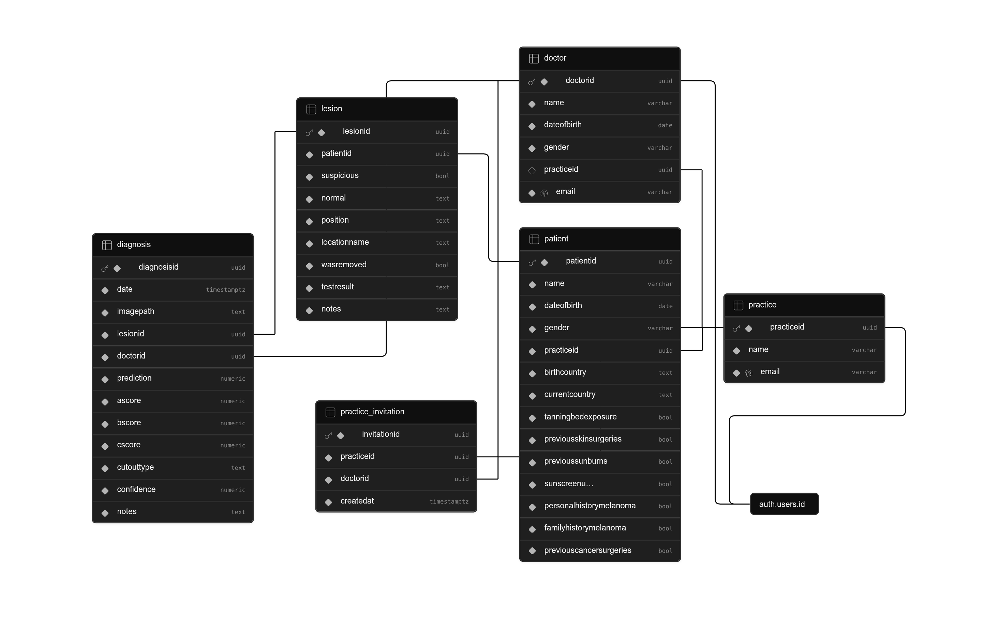

Datenhaltung und Backend-Architektur
Für das Datenmanagement der Dermascan-Applikation wird die Cloud-Plattform Supabase eingesetzt. Supabase basiert auf PostgreSQL, einer objektrelationalen Datenbank, die ein striktes, stabiles und konsistentes Datenbankschema ermöglicht. Die Verwendung eines externen Datenbankdienstes bietet für die aktuelle Prototypenphase den Vorteil einer einfachen Integration und ortsunabhängiger Nutzung. Insofern reicht die kostenfreie Stufe (Free Tier) vollkommen aus, um funktionale Demodaten zu halten und Kernprozesse abzubilden.
Datenmodell (Schema)
Das relationale Schema wurde so entworfen, dass es den organisatorischen Ablauf einer Arztpraxis sowie den dermatologischen Diagnoseprozess nativ abbildet.

Zentrale Entitäten und Tabellenstrukturen
Die Datenbank ist in sechs Kernbereiche unterteilt. Nachfolgend werden die Tabellen und ihre spezifischen Aufgaben im System erläutert:
| Tabelle | Beschreibung / Verwendungszweck | Key-Beziehungen |
|---|---|---|
practice |
Repräsentiert die Arztpraxis als oberste organisatorische Einheit (Mandant). | practiceid (PK) |
doctor |
Speichert Profildaten der Ärzte. Ein Arzt ist zwingend einer Praxis zugewiesen. | doctorid (PK, FK zu auth.users), practiceid (FK) |
patient |
Enthält demografische Daten sowie die detaillierte dermatologische Vorgeschichte des Patienten (z. B. Sonnenbrände, Melanome in der Familie). | patientid (PK), practiceid (FK) |
lesion |
Repräsentiert eine spezifische Hautveränderung (Läsion) eines Patienten inklusive Lokalisationsdaten und Status (z. B. ob sie entfernt wurde). | lesionid (PK), patientid (FK) |
diagnosis |
Dokumentiert das Ergebnis einer Läsionsuntersuchung. Hier fließen KI-Erkenntnisse und ärztliche Notizen zusammen. | diagnosisid (PK), lesionid (FK), doctorid (FK) |
practice_invitation |
Verwaltet Einladungen, um Ärzte strukturiert einer Praxis zuzuordnen. | invitationid (PK), practiceid (FK), doctorid (FK) |
Ausgewählte Datenfelder im Fokus
diagnosis.prediction&diagnosis.confidence: Halten das Klassifikationsergebnis des Convolutional Neural Networks (CNN) sowie den dazugehörigen Konfidenzwert (Wahrscheinlichkeit für Malignität).diagnosis.ascore,.bscore,.cscore: Numerische Werte, die aus deterministischen Bildverarbeitungsalgorithmen hervorgehen (Asymmetrie, Begrenzung, Farbe gemäß der klinischen ABCDE-Regel).lesion.position&lesion.locationname: Ermöglichen die exakte Verortung der Läsion am Körper zur späteren visuellen Darstellung auf einer interaktiven 3D-Körperkarte.auth.users.id-Verknüpfung: Die native Supabase-Authentifizierung ist direkt mit den Tabellendoctorundpracticegekoppelt. Ein eingeloggter Account agiert im System entweder in der Rolle einer Praxis oder eines Arztes.
Sicherheitskonzept
Die Absicherung der Daten erfolgt auf zwei komplementären Ebenen: über Supabase Edge Functions für Datenbankoperationen und über Row Level Security (RLS) für Bilddateien.
1. Datenvalidierung und Autorisierung via Edge Functions
Die Erstellung von Diagnosen und das Schreiben kritischer Datensätze erfolgt nicht direkt vom Client aus, sondern wird über serverseitige Supabase Edge Functions geschleust.
Beim Aufruf einer Funktion (z. B. zur Speicherung einer neuen Diagnose) werden im Hintergrund folgende Sicherheitsprüfungen durchgeführt:
- Identitätsprüfung: Über das übermittelte JWT (JSON Web Token) des Autorisierungs-Headers wird verifiziert, ob der anfragende Nutzer authentifiziert ist und ob seine
auth.uid()exakt mit der im Payload angegebenendoctoridübereinstimmt (Schutz vor Identitätsdiebstahl). - Praxis-Abgleich (Cross-Tenant-Validation): Die Edge Function löst eine serverseitige Abfrage aus, die prüft, zu welcher
practiceidder Arzt gehört. Gleichzeitig wird ermittelt, zu welcherpracticeidder Patient gehört, dessen Läsion untersucht wird. Nur wenn Arzt und Patient zur selben Praxis gehören, wird die Operation freigegeben. Andernfalls bricht die Funktion mit einem Fehler (403 Unauthorized) ab.
2. Dateispeicherung & Storage Row Level Security (RLS)
Medizinische Bilddaten (Aufnahmen der Läsionen) werden im Supabase Storage im Bucket lesion_images abgelegt. Um unbefugte Zugriffe zu verhindern, folgt die Verzeichnisstruktur einem strikten Pfadmuster, das vom Client beim Upload erzeugt wird:
Pfadstruktur: /{practiceId}/{patientId}/{diagnosisId}.jpg
Der Zugriff auf diesen Bucket wird durch präzise PostgreSQL-Policies (RLS) auf dem Storage-Server reglementiert:
-
Upload-Berechtigung (INSERT): Ein Arzt darf eine Datei nur hochladen, wenn:
- Die Datei die Endung
.jpgbesitzt. - Der erste Ordnername im Pfad exakt mit seiner eigenen
practiceidübereinstimmt. - Der zweite Ordnername im Pfad zu einem Patienten gehört, der ebenfalls dieser Praxis zugeordnet ist.
- Unter diesem Namen nicht bereits eine manipulierte Diagnose-ID existiert.
- Die Datei die Endung
-
Lese-Berechtigung (SELECT): Ein Arzt kann Bilder nur dann einsehen oder herunterladen, wenn das Verzeichnis (der erste Ordneraufruf des Pfades) mit der
practiceidseines eigenen Profils übereinstimmt.
Durch diese Architektur wird datenbankseitig erzwungen und in Tests abgesichert, dass Ärzte und Praxen nicht auf medizinische Bild- oder Diagnosedaten fremder Mandanten zugreifen können.